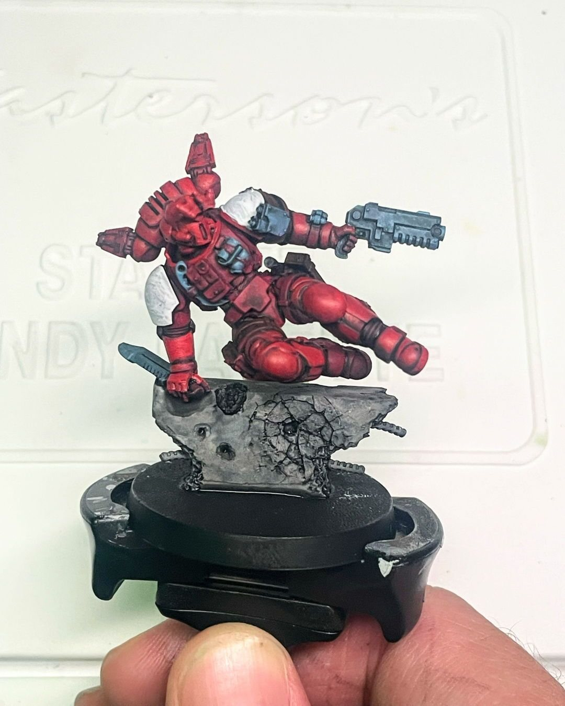
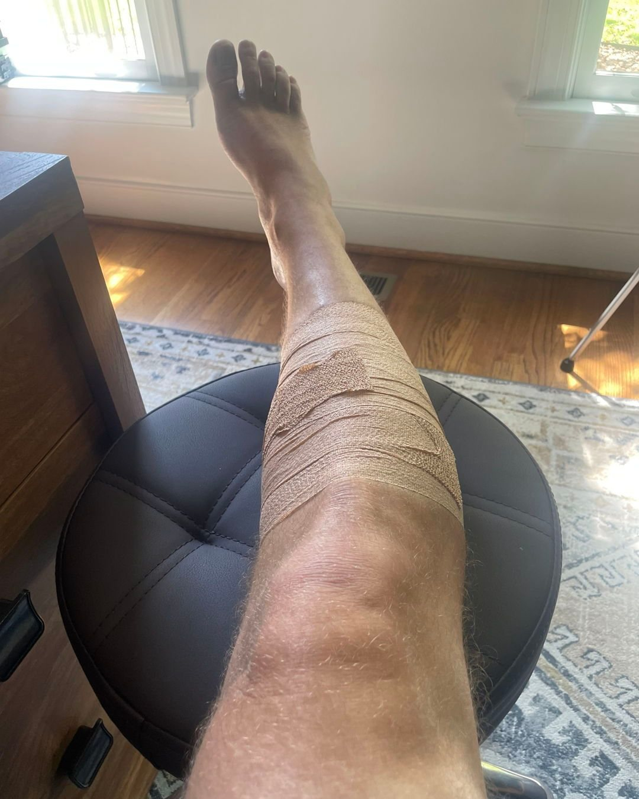
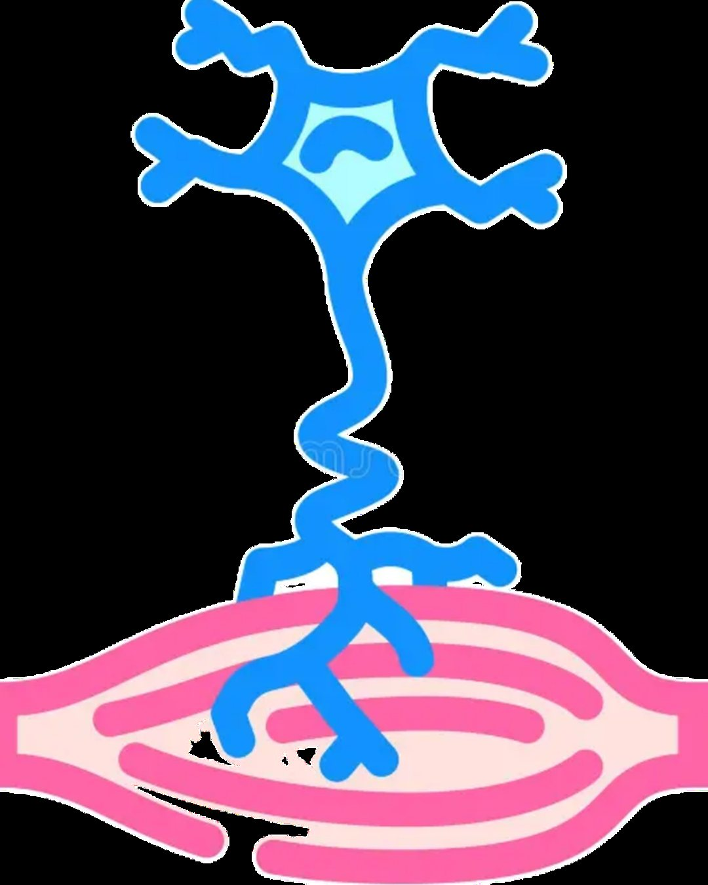
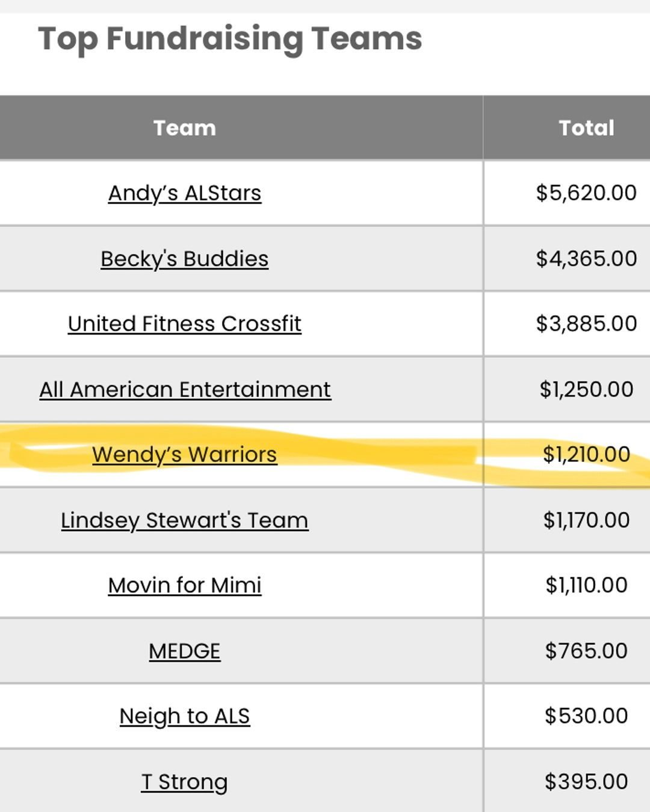

ALS Awareness Marine, base coats
Progress update! ❤️🤍
I’m getting the base coats done on my #ALS Awareness soldier. My plan is to do a blue/white pinstripe on one shoulder and a flower on the other. The pinstripes are for Yankees great Lou Gehrig who suffered from the disease. I still need to decide what to do on the other shoulder - maybe the symbol for ALS (a neuron) or a ribbon (swipe to see examples).
In other news, I finished my first actual 5k distance training the other day in preparation for my ALS 5k in a few weeks. I definitely sprained my calf during it though, so I’m having some recovery days and then getting back at it soon. And we're in the top 10 of teams fundraising for the event so let's GOOOO!
You can support me and my team here (link in bio too)
👉 tinyurl.com/mini5k
You can join the #grimdarkexchange here
👉 instagram.com/grime.time.painting (@grime.time.painting)
#als #alsawareness #running #miniaturepainting #art #hobbies #warhammer @vallejocolors @thearmypainter @solacoffee